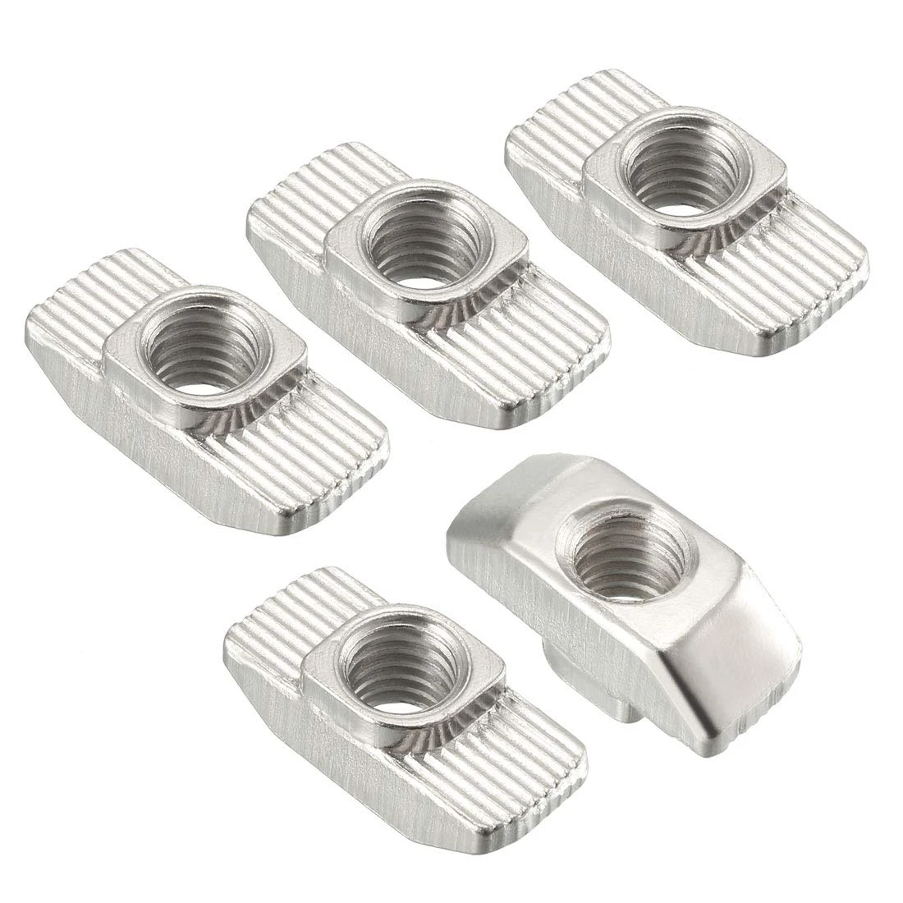
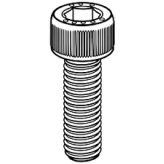
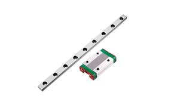
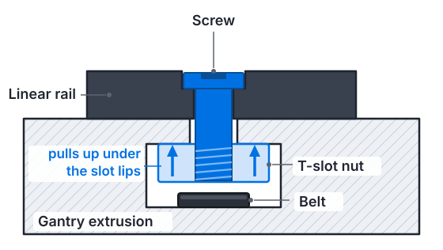
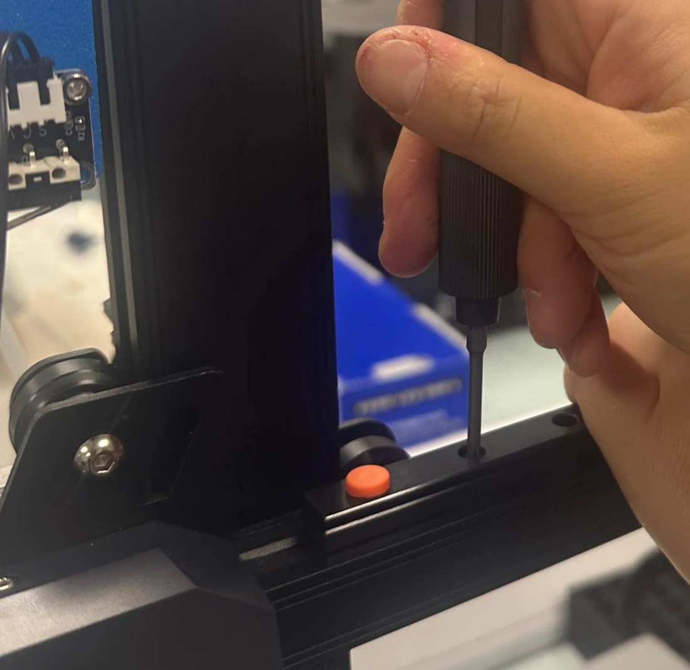

Filing T-slot nuts and Mounting Linear Rail
Fit the T-slot nuts to the gantry extrusion, then mount the linear rail on them.
You will need

T-slot nutsx 2–3

M3 x 6mmx 2–3
Linear Rail

Explanations
How does the X-axis gantry of a 3D printer work?
The X-axis gantry belt system in a 3D printer is responsible for moving the printhead horizontally from left to right or right to left along the X-axis. The belt can be thought of as a loop that connects the stepper motor to the printhead. The X-axis stepper motor rotates its drive pulley which is connected to the belt, therefore, when the X-axis stepper motor rotates it pulls the belt along it, moving the printhead.
Why do we need a linear carriage?
The main purpose of the linear carriage is to provide a platform to connect the Frame Assembly to the X-axis belt along with providing smooth and high-precision linear motion.
Why do we need to file the T-slot nuts?
T-slot nuts for M3 screws for aluminium extrusions come in standard sizes, and getting off-the-shelf nuts is much easier than making custom ones. Our X-axis gantry extrusion needs to accommodate both the timing belt and the T-slot nuts within the same slot, which means we need to ensure that there is sufficient clearance for both components to fit without interfering with each other. To achieve this, we file down the T-slot nuts to reduce their height, creating enough clearance for the timing belt to run underneath while still allowing the nuts to sit securely within the extrusion.

Instructions
-
File each T-slot nut down until it fits. The goal is for the nut to drop into the
slot and, with a little force applied using a tool such as an Allen key, rotate into position and sit
snugly underneath the extrusion's T-slot lips. It should be secure without being excessively tight or
requiring too much force to turn. You are aiming for the T-slot nuts to slide with a bit of applied
finger force but not freely.
Note: 2–3 T-slot nuts is sufficient.
⚠ Warning: Do the filing away from the printer and clean up afterwards. Steel filings on the gantry end up in the belt and the bearings.
-
Mount the linear rail. Line the linear rail up with the T-slot nuts and screw them
down using M3 × 6 mm screws.

Figure 2: Screwing the linear rail down onto the X-axis gantry, 2-3 screws should be fine.
Tutorial videos
Guided tutorial-videos for your convenience.